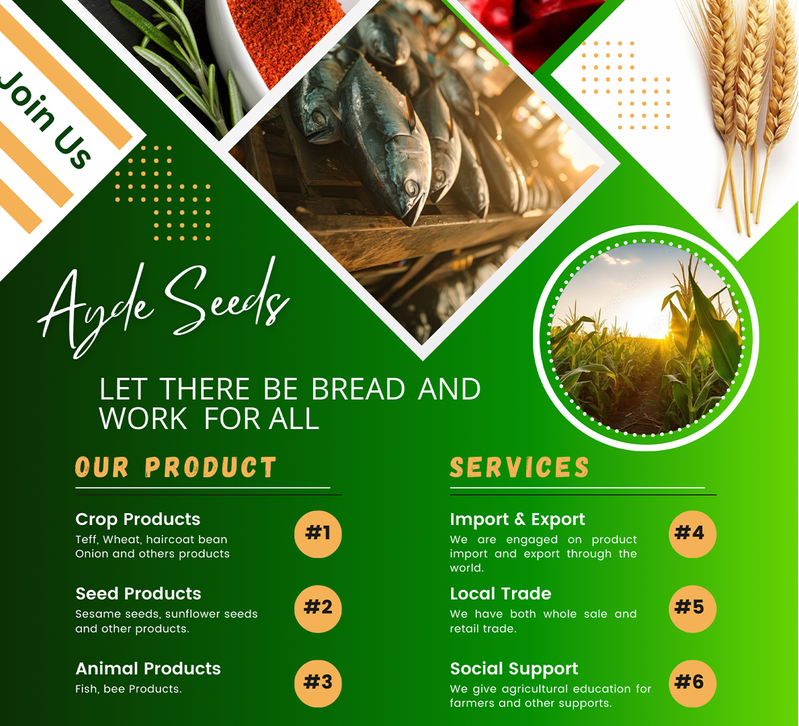

Teff
Teff is one of the ancient Ethiopian traditional food, its also know as the "Ethiopian grain" its the cornerstone of traditional dishes like injera, genfo, and keta. Known for its high nutritional value, teff is rich in protein, fiber, and essential minerals. Its unique nutty flavor and versatility make it a perfect choice for both savory and sweet dishes. Elevate your meals with teff and enjoy a taste of Ethiopia's rich culinary heritage.
Teff stands out for its exceptional nutritional profile. This tiny grain is packed with a powerhouse of nutrients, including high-quality protein, dietary fiber, and essential minerals such as calcium, iron, magnesium, and zinc. Its superior nutrient density makes it a valuable addition to any diet, supporting overall health and well-bein
Moreover, teff is a sustainable choice for environmentally-conscious consumers. Its hardy nature allows it to thrive in diverse growing conditions, and it requires less water compared to many other grains, making it an eco-friendly option that supports sustainable agriculture.
The flavor profile of teff is as remarkable as its nutritional benefits. It boasts a unique, subtly nutty taste that enhances a variety of dishes, making it an incredibly versatile ingredient. Whether you’re preparing traditional Ethiopian dishes like the spongy, tangy injera or a hearty bowl of genfo, or even exploring creative new recipes, teff’s distinct flavor adds depth and richness to your cooking.
Its Importance
Teff's versatility extends beyond traditional uses. It can be used in both savory and sweet dishes, from baked goods like bread and muffins to porridges and even as a gluten-free alternative in various recipes. Its ability to adapt to different culinary applications makes it a valuable pantry staple for both professional chefs and home cooks alike.

We Provide Teff in a quality
Elevate your meals with teff and experience the unparalleled taste and nutritional benefits of this ancient grain. By incorporating teff into your diet, you’re not only savoring the unique flavors of Ethiopian cuisine but also embracing a tradition that has nourished generations. Discover the richness of teff and let it transform your culinary creations with its healthful qualities and exquisite taste.


Post Comment
Categories
Comming Up
Construction
Hotel and Restaurant
Finance and Insurance Intermidation
RealState Business
Property and Home For Sale